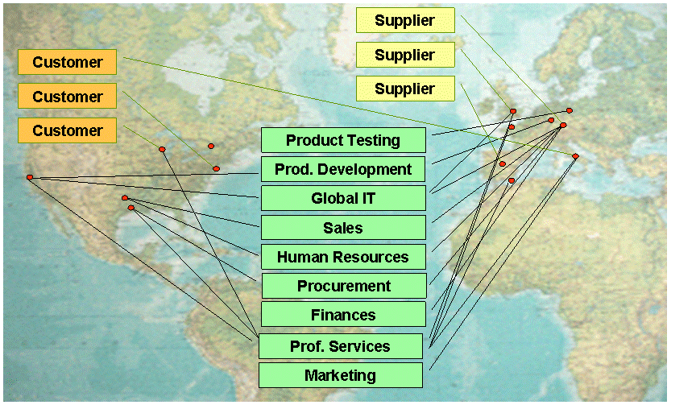
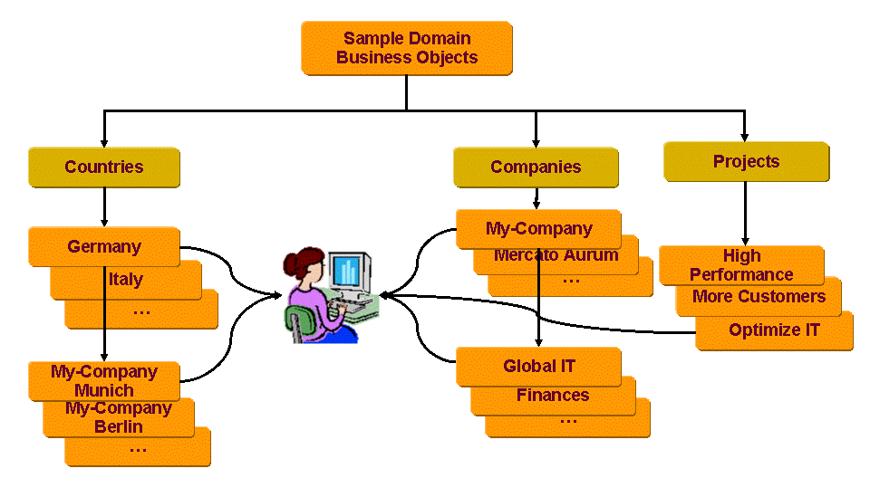

Sample-Domain_503283770
[title-text] DirX Identity Knowledge Base : Sample Domain #
Created by Gary Weissenbacher, last modified on Jul 03, 2024
[RH_PD_TOC_BK .confluence-anchor-link]#About the My-Company Sample Domain
The My-Company sample domain is a realistic scenario of a small company that demonstrates most of the features that DirX Identity provides. It comprises many DirX Identity objects, such as users, departments, privileges, policies, request workflows and target systems. The My-Company sample domain is designed to be the basis for the quick start tutorial. You can select the My-Company sample domain during DirX Identity configuration. You can also load the Connectivity scenarios that correspond to the My-Company domain by hand.
My-Company represents a small, international industrial company called My-Company in a business-to-business (B2B) scenario, where additional companies act as customers and suppliers. My-Company designs and produces hardware and software products made available to end customers through re-seller companies who buy My-Company’s products and sell them in their malls and stores. Supplier companies deliver the hardware and software that My-Company needs in order to build its products.
This chapter describes the objects in the My-Company sample domain and the relationships between them. We recommend that you read the descriptions given here while you look up the objects in the DirX Identity views.
Logging In
To log in to the My-Company domain, follow the procedure described in "Logging In" in the "Getting Started" chapter.
Users
Click the Users view. For the sample domain, this view presents a directory tree organized into user subtrees for three companies: Customers, Suppliers, and the employees of My-Company. The user tree also contains the standard query folders provided for the user view and a System folder that is not currently used.
The companies that make up the sample domain scenario are distributed throughout Europe and the U.S.A., as illustrated in the following figure.

Figure 1: DirX Identity Sample Domain Scenario
My-Company
Open the My-Company subtree to see the organizational units that My-Company contains. In the sample domain scenario, organizational units are designed as tree objects. Also check the content and structure of the departments that are either lower-level organizational units or user entries. The organizational units are:
-
General Management (GM) - this organizational unit is not modeled as a department. It consists of the general manager Olivier Hungs and his assistant Gabriela Morton, who manage all the other departments with about 60 employees. Both persons reside in Munich, Germany.
-
Finances (FI) - this department, managed by Christopher Dalmar, is responsible for finances, cost control and auditing. It is also located in Munich, Germany.
-
Global IT (IT) - this department handles most of the administrative tasks for the company, including the management of DirX Identity itself and most of the target systems. Its manager is Nik Taspatch, who resides in San Jose, California, U.S.A. The other people in this department are located in Europe.
-
Human Resources (HR) - this department handles personnel issues. Hans Berner controls his department members in Europe and the U.S.A.
-
Marketing (MA) - this department handles tasks like public relations, fairs and conferences and is located in Rome, Italy. Its manager is Gianfranco Benetton.
-
Procurement (PR) - this department, managed by Henry Filler, buys the hardware and software components to build the final products and also buys computers and machines that are necessary for the company infrastructure. This department also controls the assembly of the components in the sub-contractor company CompuTip in Munich.
-
Product Development (PD) - this organizational unit consists of two sub-departments for hardware and software development that are managed by Frederic Duplan, Veronique Cohu and Bill Sedran. Hardware development is located in Frankfurt, Germany and software development resides in San Jose.
-
Product Testing (PT) - this department performs integration and system tests on the final products. It is located in Berlin, Germany and is managed by Klaus Reichel.
-
Professional Services (PS) - this organizational unit is distributed all over the world and performs pre- and post-sales. Lionel Bellanger manages it.
-
Sales (SA) - this organizational unit consists of two sub-departments in Europe and the U.S.A. Hatty Straub and her assistant Ruben Briner manage Sales. Sven Richter and Guo-Qiang Brailey manage the sub-units.
Suppliers
Three companies act as suppliers for My-Company:
-
MicroWare (London, Great Britain) - produces the necessary hardware components
-
MediaComp (Madrid, Spain) - delivers software components
-
CompuTip (Munich, Germany) - assembles the hardware and software components to build the final products
Customers
Three re-seller companies are My-Company’s customers:
-
Mercato Aurum (Rome, Italy) - the distributor for My-Company products in Italy
-
MultiMarket (Chicago, USA) - the distributor for My-Company products in the U.S.A.
-
TakeAway (New York, USA) - the market for end customers in Great Britain
User Properties
Click a user in one of My-Company’s departments. You’ll see two rows of tabs that group different user properties and attributes according to their functions. These tabs and fields represent the default user definition for the My-Company sample domain. This user definition has been designed to provide a comprehensive set of user properties and attributes that you are, with some exceptions, allowed to change or even remove from the user definition if they do not meet your needs.
The default user definition is modeled as a set of object descriptions in XML. The definitions of user properties and attributes that you are not allowed to modify or delete can be found in the Domain Configuration view at My-Company → Object Descriptions → User.xml. If you go to Domain Configuration → My-Company → Customer Extensions → Object Descriptions, you will find two default object description files: UserCommon.xml and User.xml. As delivered with DirX Identity, User.xml is empty and is intended for your use. UserCommon.xml contains the sample set of user properties and attributes that you can modify or delete as necessary. You can also use the object description paradigm to create your own custom user object descriptions. For example, you may want to define several different user types that display different properties and attributes depending on the type of user, such as "internal" user and "contractor". For more information about object descriptions and how to work with them, see the section on "Customizing Objects" in the DirX Identity Customization Guide.
The next sections briefly describe the user properties and attributes provided with the default user definition for the My-Company sample domain and gives some hints on what you can do with them. The context-sensitive help available on each tab (just click Help) provides complete details on each field.
General User Properties
The General tab contains properties that identify the user. The My-Company sample domain uses the following properties in this tab:
-
The "name" properties Name, First Name, Middle Name, Last Name.
-
Salutation (the sample domain supplies salutations in a variety of languages), Day of Birth, Title (for example, Dr.) and Gender (the sample domain supplies the selections Male, Female, Neutral).
-
The "identifier" properties Employee Number and Master. Employee Number (employeeNumber) is a customer-specific identifier that comes, for example, from a human resources system. Master (dxmOprMaster) is a directory-specific value that identifies the source of the user entry (it is the connected directory’s Master Name operational attribute, written to the user entry by the connected directory’s source workflow). This feature is intended for use in multiple master scenarios to protect user entries mastered by one directory source from being created or deleted by another master (modification by different masters is permitted).
The My-Company domain has two sources of user entries: the HR-ODBC connected directory (which is already set up in the sample Connectivity scenario delivered with the sample domain), and the New-HR connected directory, which is set up as part of the tutorial exercise "Importing Identities" in the "Getting Started" section of the guide. The source workflows for these two directories are configured to use the Master Name operational attributes (the Use Operational Attributes field is checked in the workflow configurations). As a result, a user in the My-Company sample domain will either have the value HR to indicate that the HR-ODBC directory is the source of the entry, or the value NEWHR, which indicates that the New-HR directory is the source.
All of the default connected directories provided with DirX Identity have their Master Name operational attribute set to HR. If you intend to set up a multi-master scenario and use one or more of the default connected directories as templates, you should make sure you assign a different Master Name to your different master connected directories and set the Use Operational Attributes flag in the source workflows for these connected directories. For more information on creating connected directories, see "Managing Connected Directories" in the DirX Identity Connectivity Administration Guide. For more information on source workflows, see the section "Using the Source Workflows" in the ** DirX Identity Connectivity Administration Guide. -
Description, which briefly describes the person’s tasks. A description is useful for providing a human-readable way to identify a user when it is part of an extensive table-based display.
-
Employee Type (employeeType), which can be used to classify users. The My-Company sample domain defines the following employee types:
Internal - all employees of My-Company
Contractor - all contractors that work for My-Company
Customers - customers of My-Company
Suppliers - suppliers of My-Company -
Business Category, which identifies the type of business the user works for. The My-Company sample domain defines business categories for Banking, Energy, Healthcare, Industry, Real Estate, and Transportation. It assigns Industry to the My-Company employees, but does not assign a business category to employees in Customers and Suppliers.
The default General user properties tab also provides an Identifier property (dxmGUID) that customers can use to set up a global unique identifier (GUID) for each user. To use this property, the customer designs a unique identifier schema and then writes its own GUID generator to create the GUIDs according to the schema. The default connected directories delivered with DirX Identity implement a sample GUID schema and generator that generates a local GUID for a user from a fixed string prefix configured in each connected directory and the user’s Employee Number, if the feature is activated in the corresponding source workflows. For more information, see the context-sensitive help on connected directories and workflows and the section "Understanding the Tcl-based Source Workflows" in the DirX Identity Application Development Guide. The My-Company sample domain does not use the Identifier property.
Relationships to Other Users
The Relationships tab specifies the relationships that a user has to other users. The My-Company sample domain defines five types of user-to-user relationship:
-
Owner - the administrator who can manage this user, or the person responsible for this user, if it is a functional user, for example, the representation of a hotline or a service. My-Company does not use this field.
-
Manager - the user’s manager; the My-Company sample domain uses this relationship for its Internal employee types
-
Secretary - the user’s secretary or administrative assistant
-
Representative - the user’s representative; that is, the person who can perform the user’s functions if he or she is unavailable
-
Sponsor - the user’s sponsor; My-Company uses this relationship for its Contractor employee types
The values specified in these fields are links to other users. To see an example of this setup, go to Users → My-Company → Human Resources and then click on Berner Hans, the manager of the Human Resources department. You can see that he has a Manager link (Olivier Hungs, who is the manager of My-Company), a Secretary link (Laura Telfer) and a Representative link (Mary-Jane Ormsby), but no Sponsor link because he is not a contractor.
Now click on Strober Santiago. His Manager is Olivier Hungs and his Sponsor is Hans Berner. Although Santiago Strober reports to Olivier Hungs the general manager and not to a department manager, he needs to have a department sponsor because My-Company contractors are required to have sponsors in their functional areas. Because he currently works in Human Resources, he is assigned the sponsor Hans Berner, the HR manager. This example demonstrates that you can set up any kind of relationship hierarchy, not just one that follows your managerial hierarchy.
These relationships can be useful in, for example, approval workflows to dynamically search for specific persons. For example, you could set up an approval workflow that searches for both the user and the user’s representative so that you have both persons in your approval activity. If the user is not available, the representative has the right to approve. For more information on user-to-user linking, see the section "Working with Links at User Entries" in the section "Managing Users" in the DirX Identity Provisioning Administration Guide.
You can also use the relationships between users in conjunction with variable substitution to implement dynamic participant calculation in your request workflows. For more information about this concept, see the section "Participant Calculation" in the path "Understanding the Default Application Workflow Technology" → "Understanding Request Workflows" → "Customizing Request Workflows" in the DirX Identity Application Development Guide.
Operational Information
A user’s operational properties come directly from the DirX Identity system itself. Customers are allowed to change some of these properties, for example the end date of a user or the deactivation period. These properties influence the user’s status field. For details about these properties, see the online help. To understand DirX Identity’s state handling mechanism, read the chapter "Managing States" in the DirX Identity Provisioning Administration Guide. The "User and Account Life-Cycle" section is the most interesting for beginners.
Communication Information
The Communications tab contains communications-related user attributes like email, office, mobile and FAX telephone numbers, and blog or other Web addresses. The My-Company sample domain uses all of these fields.
This tab also specifies the user’s preferred language, which determines the language used in mail messages delivered by request workflows, if mail text in that language has been set up. The My-Company domain has set up English and German for request workflow mail messages. All users in My-Company have a preferred Language set. If this is one of English or German, the mail is sent in that language. Otherwise the respective default values are taken. The users in Suppliers and Customers do not have any preferred language set, so mail messages they receive from request workflows will be sent in the default language. For more information about nationalizing mail messages in request workflows, see the path "Understanding Default Application Workflow Technology" → "Understanding Request Workflows" → "Request Workflow Architecture → "Nationalizing Request Workflows" in the DirX Identity Application Development Guide.
Authentication Information
A user’s authentication properties come directly from the DirX Identity system itself and are only displayed for information. Customers can change the password policy; that is, they can specify the type of password policy that a user must follow, but they cannot change any of these other properties. For details about these properties, see the online help.
Links to Organizations
The Organization tab displays the user’s links to business objects modeled as organizations and organizational units. The companies that make up the sample domain have been structured as organization business objects and the My-Company departments have been structured as organizational units underneath the My-Company organization. See the "Companies" section in "Business Objects" for more information about these objects and how they are structured and used. The users in the My-Company part of the sample domain are linked to the My-Company organization business object and the organizational business unit that corresponds to the department in which they work.
To understand this relationship, let’s look at a user. Go to Users → My-Company → Human Resources and click on Berner Hans, the manager of the Human Resources department. Click the Organization tab. In the Organization field, you can see that he has a link to the My-Company business object (if you click the  icon to the right of Organization, the My-Company business object is displayed). In Organizational Unit, he has a link to the organizational unit that represents Human Resources, which is the department in which he works. The other users in the My-Company part of the user tree have similar assignments. The organization and organizational business objects set up for the My-Company users are used to master department-specific information and to automatically assign department-specific roles to each member of a department. For more information about this sample domain structure, see the "Business Objects" section. For more information on user-to-business object linking, see the section "Working with Links at User Entries" in the section "Managing Users" in the DirX Identity Provisioning Administration Guide.
icon to the right of Organization, the My-Company business object is displayed). In Organizational Unit, he has a link to the organizational unit that represents Human Resources, which is the department in which he works. The other users in the My-Company part of the user tree have similar assignments. The organization and organizational business objects set up for the My-Company users are used to master department-specific information and to automatically assign department-specific roles to each member of a department. For more information about this sample domain structure, see the "Business Objects" section. For more information on user-to-business object linking, see the section "Working with Links at User Entries" in the section "Managing Users" in the DirX Identity Provisioning Administration Guide.
Links to Locations
The Location tab displays the user’s links to business objects modeled as locations. Location business objects mirror the countries and branch locations in which My-Company and its customers and suppliers are located; for more information, see the section "Countries". Each user in the sample domain is linked to the location that corresponds to the branch location of the company in which he or she works.
To understand this relationship, let’s look again at Hans Berner. Go to Users → My-Company → Human Resources and click on Berner Hans, the manager of the Human Resources department. Click the Location tab. In the Location field, you can see that he has a link to the business object that represents My-Company’s main office of its Human Resources department: My-Company Munich (if you click the  icon to the right of Location , the My-Company Munich business object is displayed).
icon to the right of Location , the My-Company Munich business object is displayed).
Now let’s look at the Location tab of Mary-Jane Ormsby. She is linked to the business object that represents the My-Company’s Dallas, Texas branch office of its Human Resources department: My-Company Dallas.
The other users in the sample domain Users tree have similar location links. The location business objects set up for the sample domain users are used to master location-specific information for the employees who belong to the branch office. For more information about this sample domain structure, see the "Business Objects" section. For more information on user-to-business object linking, see the section "Working with Links at User Entries" in the section "Managing Users" in the DirX Identity Provisioning Administration Guide.
Links to Contexts
The Context tab is a placeholder for linking users to customer-created objects. The My-Company sample domain does not use the fields in this tab. Instead, you use the Custom folder in the Business Objects tree to store the new objects you create, and then use the Context link field in this user property tab to link your users to these customer-specific business objects.
User Privilege Assignments
The Assigned Roles, Assigned Permissions and Assigned Groups tabs show the roles, permissions and groups currently assigned to the user.
-
Go to Users → My-Company → Finances and then click Dalmar Christopher. Now click his Assigned Roles tab. Here you can see the different ways in which privileges can be assigned to users:
-
By hand (through self service or administrator action) - an administrator or Dalmar himself has assigned the roles Manager, Project Manager, Project Member, and Signature Level 3. The manual label in the Assigned by field indicates this "direct" type of assignment. You can read more about the My-Company sample domain’s privilege structure in the section "Privileges". Project Manager and Project Member are examples of privileges that use role parameters, as indicated by the Role parameters column. You can read more about the My-Company sample domain’s use of role parameters in the section "Project Organization".
-
By inheritance from a business object - Dalmar has inherited the Finances Tasks role from his link to the Finances business object, which references this role. To see this relationship, click his Organization tab and then click the
 icon to the right of Organizational Units: Finances. This action displays the Finances business object. Now click the References tab, and you can see Finances Tasks displayed in Privileges. The BO label in the Assigned by field indicates this type of assignment. You can read more about the My-Company sample domain’s business object structure in the section "Business Objects".
icon to the right of Organizational Units: Finances. This action displays the Finances business object. Now click the References tab, and you can see Finances Tasks displayed in Privileges. The BO label in the Assigned by field indicates this type of assignment. You can read more about the My-Company sample domain’s business object structure in the section "Business Objects".
Note that the Signature Level 3 role assignment also uses inheritance, in this case, by role hierarchy: the Signature Level 2 role is a junior role for Signature Level 3. To see this relationship, click the icon to the right of this role, and then click the
icon to the right of this role, and then click the  icon to the right of Privileges: Signature Level 3 to open this role. Now click Assigned Junior Roles and you can see Signature Level 2. Because this role is specified as a junior role, a user who gets the Signature Level 3 role automatically gets this one, too. For information about creating role hierarchies, see the subsection "Creating a Role Hierarchy" in the section "Managing Roles" in the DirX Identity Provisioning Administration Guide.
icon to the right of Privileges: Signature Level 3 to open this role. Now click Assigned Junior Roles and you can see Signature Level 2. Because this role is specified as a junior role, a user who gets the Signature Level 3 role automatically gets this one, too. For information about creating role hierarchies, see the subsection "Creating a Role Hierarchy" in the section "Managing Roles" in the DirX Identity Provisioning Administration Guide. -
By a provisioning rule - My-Company’s Internal Employees rule assigns the Internal Employee role to all users under the My-Company user subtree whose Employee Type field (see the General tab) is set to Internal. The rule label in the Assigned by field indicates this type of assignment. You can read more about My-Company provisioning rules in the section "Rules".
Account Ownerships
The Account tab shows the accounts in the target systems that have been assigned to the user by the DirX Identity Provisioning process. Assigning a privilege creates the necessary accounts automatically with no manual interaction. The assignments and their properties come directly from the DirX Identity system itself and cannot be changed here. For details about these properties, see the online help. For more information on the target system and account structure used in the My-Company sample domain, see the section "Target Systems". For more information on user-account linking, see the section "Working with Links at User Entries" in the section "Managing Users" in the DirX Identity Provisioning Administration Guide.
Order Information
Many DirX Identity objects have an orders tab for monitoring changes to the object that are currently pending. The Orders tab for users shows attribute and privilege assignment changes for this user that are currently pending. For example, the My-Company sample domain has an attribute policy that prohibits unauthorized changes to a My-Company user’s organization and location values; you can read more about this policy in "Attribute Policies". Consequently, when a user’s location or organization is changed, a request workflow starts automatically to get approval for the change. The Orders tab tracks this approval process. For information about the properties shown in this tab, see the online help.
SoD Exceptions
The SoD Exceptions tab lists the current SoD violations for the user and whether or not they have been approved. For information about these properties, see the online help. For more information on the SoD policies set up for the My-Company sample domain, see the section "SoD Policies".
Business Objects
DirX Identity provides a set of sample business object types organized in the following default folder structure in the Business Objects view:
-
Companies (the container for organization and organizational unit business objects)
-
Cost Locations (the container for contain cost location business objects)
-
Countries (the container for country and location business objects)
-
Custom (the container for context business objects that customers have created)
-
Projects (the container for project business objects)
The My-Company sample domain uses the companies, countries and projects business object structures. It does not implement any cost location or context business objects. You are free to extend this sample business object tree with, for example, cost location objects in the Cost-Units tree or with your own types of business objects (use the context business object type dxrContent) in the Custom tree.
The My-Company sample domain business object structure illustrates several ways to use business objects:
-
To assign privileges referenced in the business objects automatically to all users linked to the business object; the "Companies" section describes the details.
-
To master user attributes; the "Countries" section describes the details.
-
As a source of role parameters; the "Projects" section describes the details.
The following figure shows an example of the relationship between a user and the business objects in the My-Company sample domain.

For more information on using business objects, see the section "Managing Business Objects" in the DirX Identity Provisioning Administration Guide.
Companies
Click the Companies node in the Business Objects tree. You can see subfolders for the My-Company company and its customer companies Mercato Aurum, MultiMarket and TakeAway . Business objects for the sample domain supplier companies (CompuTip, MediaComp and MicroWare) have not been structured into this part of the business objects tree. These company subfolders represent organization business object types.
The My-Company organization is populated with subfolders for its departments (Finances, Sales, and so on). These subfolders represent organizational unit business object types and demonstrate automatic privilege assignment to users via business object inheritance. For example, click on Finances, and then click the References tab. In the Privileges field, you can see that this business object is linked to the Finances Tasks role in the Corporate Role tree. To find this role, click Privileges → Roles → Corporate Roles→ Department Specific. The other department business objects are set up in a similar way: each department business object is linked to one or more roles that are relevant to this department, as follows:
-
Human Resources is linked to the HR tasks role (see Privileges → Roles → Corporate Roles→ Department Specific)
-
Information Technology is linked to the User Administrator role (see Privileges → Roles → Corporate Roles→ Administration)
-
Marketing is linked to the Marketing Tasks role (see Privileges → Roles → Corporate Roles→ Department Specific)
-
Procurement is linked to the Procurement Tasks role (see Privileges → Roles → Corporate Roles→ Department Specific)
-
Product Development is linked to the HW Developer and SW Developer roles (see Privileges → Roles → Corporate Roles→ Department Specific)
-
Product Testing is linked to the Testing Tasks role (see Privileges → Roles → Corporate Roles→ Department Specific)
-
Professional Services and Sales are linked to the Sales Tasks role (see Privileges → Roles → Corporate Roles→ Department Specific)
-
General Management has no links to privileges
Each My-Company user is linked to a "department" (organizational unit) business object and thus automatically inherits the role that is linked to this object. For example, go to Users → My-Company → Sales and then open Klarmann Bruno. Click the Organization tab. You can see that this user belongs to the organizational unit Sales. If you click the icon to the right of the Organizational Unit field, the Sales business object is displayed. Click the References tab, and you can see that the role Sales Tasks is linked to this business object. Click Close and then click the Assigned Roles tab. You can see Sales Tasks listed as an assigned role, and the Assigned by field indicates that the role has been assigned by a business object (BO).
If you change a user’s organizational unit, DirX Identity automatically unassigns the obsolete privileges and assigns the new ones that are relevant to his new organizational unit. For example, return to the Organization tab for Klarmann Bruno and then click the icon to the right of the Organization field. The Companies business object tree is displayed. Select Marketing to move the user to the Marketing organization, and then click Save. This action automatically removes the Sales Tasks role and assigns the Marketing Tasks role to the user. Conversely, if you change the privileges that are linked to a business object or make changes to the linked privileges themselves, all users linked to the business object will automatically be updated with the new privilege assignments and/or the updated privilege.
Note that changing a user’s organizational unit means changing his link to an OU business object in the Business Objects tree. Moving a user from one department to another in the Users tree has no effect; for example, if you move Klarmann Bruno from the Users → My-Company → Sales - > Sales Europe node to the Users → My-Company → Marketing node, he remains linked to the Sales department until you change this business object link. The sample domain has set up the My-Company User tree to mirror the structure of the Business Object tree, but any kind of Users tree structure is permissible. For example, you may want to create an "administrative area" structure, where users are grouped according to the administrator who is responsible for managing them.
While the Companies → My-Company "department" organizational unit business objects use only the privileges link, it is also possible to link business objects to other items, such as locations, cost units, categories, and contexts. If you want to create category or context objects, you must create them under the Custom node in the Business Object tree. For more information about business objects, see "Managing Business Objects" in the DirX Identity Provisioning Administration Guide.
Countries
Click the Countries node in the Business Objects tree. You can see subfolders for each country in which My-Company, its customers and its suppliers are located: CA (Canada), DE (Germany), ES (Spain), FR (France), GB (England), IT (Italy), US (USA). These subfolders represent country business object types. Each country subfolder in turn contains subfolders for company branch locations - for example, My-Company Paris (FR), My-Company Barcelona (ES), MediaComp Madrid (ES) and so on. These subfolders represent location business object types.
The objects in the Countries folder demonstrate the inheritance of business object data into user attributes and serve as samples for data inheritance. The business object is linked to the user object and masters the business data. If you change the business object linked to the user (because, for example, the user moves to a different branch office), the user data is automatically updated with the information from the currently linked business object. This update is performed immediately during the save operation. Likewise, if you change data at the business object (for example, the branch office street address), the change is propagated to all users linked to this object. This update runs in the background and can take some time to take effect, especially when the number of assigned users is high.
In the sample domain, each user is linked to a location business object and thus automatically inherits the location information in this object. For example, open Countries → DE → My-Company Munich and look at the postal code, street and address information there. Now go to Users → My-Company → Finances and open Abele Marc. Click the Location tab. You can see that this user belongs to My-Company Munich and has the same information in his postal code, street and postal address attributes. If you click the  icon to the right of the Location field, the My-Company Munich business object is displayed showing this same information. Now click the icon to the right of the Location field. The Countries business object tree is displayed. Select My-Company Berlin and then click OK. Now you can see that Marc Abele’s postal code, street and postal address information has changed to reflect the My-Company Berlin location.
icon to the right of the Location field, the My-Company Munich business object is displayed showing this same information. Now click the icon to the right of the Location field. The Countries business object tree is displayed. Select My-Company Berlin and then click OK. Now you can see that Marc Abele’s postal code, street and postal address information has changed to reflect the My-Company Berlin location.
Note that if you save this change (by clicking Save), an approval workflow is automatically started. This action occurs because there is an attribute access policy for My-Company users that protects against changing locations and organizations without manager approval (you can read more about this policy in "Attribute Policies") and the domain-level flag to enable this type of workflow is set (see the "Request Workflow Parameters" section in "Domain Configuration" for details).
The My-Company sample domain also contains a sample JavaScript routine in its user object description that calculates the user’s country information from the value in his Location field (dxrLocationLink). So when a user’s location changes, his country information is updated automatically, too. To see the elements of this feature, go to Domain Configuration → My-Company → Customer Extensions → Object Descriptions. Click UserCommon.xml, and then scroll or search to the Locality tab definitions. Here you see the property definition for the country field (c). It uses the CountryFromLocation JavaScript, which you can find in Domain Configuration → My-Company → JavaScripts. The country information is stored in the Country proposal list, which you can find at Domain Configuration → My-Company → Customer Extensions → Proposal Lists. For more information on using JavaScripts and proposal lists in object descriptions, see the following sections in the DirX Identity Customization Guide:
-
For JavaScripts, see the section "Using JavaScript Files" in the chapter "Customizing Programming Logic".
-
For proposal lists, see the section "Specifying Proposal Lists in Property Descriptions" in the section "Properties and Property Elements" in the chapter "Customizing Objects"
Projects
Click the Projects node in the Business Objects tree. You can see three subfolders that correspond to the three optimization projects that My-Company runs:
-
HighPerformance - a project for general internal process enhancements.
-
OptimizeIT - a project for better IT structures.
-
MoreCustomers - a project to enhance sales and marketing activities.
These subfolders represent project business object types. My-Company’s project organization uses these business objects as the source for role parameters in user-project assignment: there is a Project role parameter that references these business objects, and there are Project Member and Project Manager roles that use this role parameter:
-
To view the role parameter, click Domain Configuration → My-Company → Customer Extensions → RoleParams → My-Company and open the Project role parameter. This parameter has been created to list all business objects in the Project tree for selection during a role assignment. If you look at the DN area in the General tab, you can see that it links to the Business Objects → Projects tree, and will thus display all business objects contained in this tree in a drop-down list (in Web Center and DirX Identity Manager) when a role that uses this role parameter is assigned to a user.
-
To view the roles, go to Privileges → Roles → Corporate Roles → Project Specific. Open Project Member and then click the Role Parameters tab. If you place your cursor over the Project column, you can see that it points to the Project role parameter (the Tool Tip shows the role parameter’s distinguished name (DN).). Consequently, when someone assigns this role to a user, he is asked (via drop-down list) which project the role is for - HighPerformance, OptimizeIT or MoreCustomers - the values that come from the Projects business objects tree.
The sample domain illustrates how to use business objects to populate role parameter selections; you can also use them to build proposal lists. You can also associate a proposal list with a role parameter to create one list (using business objects or other objects as a source) that you can use for both role parameter selection and drop-down proposal lists. For more information on using business objects, see the section "Managing Business Objects" in the DirX Identity Provisioning Administration Guide. For more information about creating role parameters and proposal lists, see the section "Customizing Parameters" in the DirX Identity Customization Guide.
Privileges
The My-Company sample domain contains a set of sample privileges that allow for provisioning of the users in the related target systems structured into a folder hierarchy based first on privilege type, and then on categories of privilege that correspond to My-Company’s business structure. Click the Privileges view. You will see Roles, Permissions and Groups folders. The next sections provide more information on how these folders are organized.
Roles
The Roles subtree is subdivided into a B2B Roles subtree and a Corporate Roles subtree. The B2B Roles subtree contains all roles for customers and suppliers, while the Corporate Roles subtree contains all roles for the My-Company employees and contractors.
There are six Customer roles: all customers are classified as Silver Customers. Some are Gold Customers and only a few are Platinum Customers. These classes determine the bonus program. Another set of roles defines the services a customer can subscribe to: Customer Newsletter, Hardware Beta Programs and Software Beta Programs.
Supplier roles include a Standard Class for each supplier and, for suppliers that perform very well, a First Class role.
The Corporate Roles subtree contains another six folders. A collection of all administrative roles makes up the Administration folder. The Department Specific roles folder contains all roles that define tasks for the various organizations in My-Company. The Project Specific roles folder collects all roles necessary for project management. The Physical Access folder contains all roles that pertain to granting access to secured computer rooms in several My-Company branches. The Self-Service folder contains all roles that users can assign themselves via user self-service subscription. All other roles are collected under the General folder. Within this folder is a very complex role - Cost Location Manager - that is part of a specific use case; to read more about this example, see the section "Policies for Hierarchical Role Parameters" in the DirX Identity Provisioning Administration Guide.
The sample domain’s privilege structure demonstrates how to group privileges so that access policies can easily be applied to them. For example, the Roles → Corporate Roles → Self Service folder contains all of the roles that users can assign to themselves with Web Center self service. Now go to Policies → Access Policies → My-Company → Grant Policies and then click on Self Service. This access policy controls which users (in this case, users with the employeeType "Internal") can assign to themselves these roles with self service. If you click the Resources tab and look at the Resources filter values, you can see that the policy directs DirX Identity to apply this policy to the roles in the Roles → Corporate Roles → Self Service folder. If you subsequently add a new role to this folder, the Self Service access policy is automatically applied to it. If you look at the Resources field, you can see additional physical access roles listed here. As a result, the policy will be applied to these roles explicitly, but any new role added to the physical access folder will not have the policy applied to it. So the sample domain’s privilege structure shows, too, that you can keep privileges segregated from access policies and add them as necessary. You can read more about access policies in "Access Policies".
The sample domain also structures privileges that use role parameters into a separate tree; this is the Project Specific tree underneath Corporate Roles. You can read more about how role parameters are used in the My-Company sample domain in the section "Project Organization".
However, role managers are free to structure their privileges as they like. The My-Company domain is only an example of a privilege structure.
Now click a role, and then click the Assigned Permissions tab to view the attached permissions of the role. In the sample domain, the permissions are almost always symmetrical to the roles, which mean that each permission has exactly one corresponding role, with the following exceptions:
-
The Contractor role consists of the Contractor permission and the Restricted File Share permission.
-
The Internal Employee role uses the Internal Employee, the Group File Share, the Standard Tools and the Accounting permissions. This is an example of a complex role.
-
The Manager role is a combination of the Manager permission and the Signature Level 2 permission.
-
The Training Manager role consists of the Manager and the Trainer permissions. The Trainer permission is inherited from the assigned Trainer junior role (check the Assigned Junior Roles tab). The Trainer value in the Source column in the Assigned Permissions tab indicates this role hierarchy.
-
The SW Developer Tasks and HW Developer Tasks roles (these are department-specific roles) have a combination of a common Development Tasks permission and a hardware or software-specific permission (SW Developer or HW Developer). The SW Developer Tasks role also includes a RACF Standard permission that allows membership in standard RACF groups.
-
The Test Tasks role (another department-specific role) has the Test Tasks and RACF Standard permissions.
-
The MVS Administrator role (in Administration) has the MVS Administrator and RACF Standard permissions.
Click a role, and then click the Users tab to see who is assigned to the role.
The Signature Level 3 role provides another example of a role hierarchy. Click this role in the General folder. It contains the Signature Level 2 role as a junior role (click the Assigned Junior Roles tab). This means that an assignment of the Signature Level 3 role includes the automatic assignment of the Signature Level 2 role. You can also see that the Signature Level 2 role is used by a senior role if you click the Senior Roles tab.
The roles in the Physical Access folder are examples of roles that are designed to be assigned manually. The follow-on tutorial "Using Manual Provisioning" demonstrates the use case for these roles. They are also examples of roles that are assigned via provisioning rules; which are described in more detail in the section on "Rules".
In this example, the following roles are set to Requires approval:
-
All of the administrator roles
-
All of the physical access roles
-
The general roles Manager, Signature Level 3 and Trainer
-
The project-specific role Project Manager
-
The self-service roles Manager Analyst Relations, Parking Place - Munich and Corporate Credit Card
Click the Manager role, and then click the Approvals tab. Here you can see that the Manager Nomination workflow has been directly assigned to process the approval of assignments of this role to users. This is an example of direct workflow selection, where the workflow is directly linked to the privilege. The Project Manager role also has a direct assignment to the Manager Nomination approval workflow.
Click the icon to the right of the Assignment field to display the Manager Nomination workflow. Now double-click the Approval by Company Head activity icon and then click the Participants tab. Here you can see that the general manager Olivier Hungs and his secretary Gabriela Morton have been explicitly specified as approvers (only one must approve). This is an example of a static participant definition. For more information about participant calculation, including how to use variable substitution and user attributes to create dynamic approval definitions, see the subsection "Participant Calculation" in the path "Understanding Request Workflows" →"Customizing Request Workflows" → "Using Variable Substitution" in the DirX Identity Application Development Guide.
The other roles that require approval do not use direct workflow assignment. Instead, they use rule-based workflow selection and configure the "When Applicable" rules in the My-Company approval workflow definitions so that DirX Identity’s dynamic workflow selection algorithm always selects the 4-Eye Approval workflow to process approvals for these roles. For example, go to the My-Company workflow definitions (Workflows → Workflows → Definitions → My-Company → Approval). Open the 4-Eye Approval workflow and then look at its When Applicable tab. The Priority parameter is set to a high number so that the selection algorithm will choose it first. If you look at the When Applicable tab of the other workflows - for example, the Manager Nomination workflow - you can see that the priorities are set very low to prevent them from being selected. The 4-Eye Approval workflow works with approval policies to retrieve the manager of the user (the subject) and the owner of the privilege as approvers. Both of these users must approve the assignment.
You can read more about DirX Identity’s assignment workflow selection mechanisms, the 4-Eye Approval workflow, and approval policies in the following places:
-
In the DirX Identity Application Development Guide, see "Understanding the Default Application Workflow Technology" → "Understanding Request Workflows" → "Request Workflow Architecture" → "Selecting Request Workflows" → "Assignment Workflow Selection"
-
In the DirX Identity Application Development Guide, see "Using Request Workflows" → "Understanding Assignment Workflows" → "How Approval Works" → "4-Eye Approval"
-
In the DirX Identity Provisioning Administration Guide, see "Managing Policies" → "Delegated Administration" → "Managing Access Policies" → "Policies for Approvals"
Permissions
The Permissions subtree is subdivided into the same folders as the role subtree. It contains a B2B Permissions subtree and a Corporate Permissions subtree. The B2B Permissions subtree contains all permissions for customers and suppliers, while the Corporate Permissions subtree contains all permissions for the My-Company employees and contractors.
Click a permission, and then click the Assigned Groups tab to view the attached groups. Most of the permissions use groups in a direct relationship, but some permissions use match rules to select some of the attached groups:
-
The Windows Administrator permission uses two Administrator groups from the Windows target systems. The match rule selects the correct group based on the country attribute (c) of the user. View the groups to see the corresponding settings for the c attribute.
-
The HR Tasks permission contains four groups. The HR Access and HR Portal groups are always assigned (the country attribute is set to ""), the *SAP R3 Client group is selected via the match rule. The Marketing Tasks permission structure is similar.
-
The Sales Task permission is more complex. The CRM Access and Sales Portal groups are always assigned (the country attribute is set to ""), the *SAP R3 Client and FS Sales group are selected via the match rule.
-
The Group File Share permission is the most complex. It represents a combined access right that allows access to the department-specific file share (attribute ou). It also selects the correct file share based on the country in which the employee resides (attribute c). See the Match Rule tab for the rule. In the Assigned Groups tab, you will see nine file share groups. Only FS Human Resources and FS Sales are available in Europe and the USA. View the groups for the corresponding settings of the c and ou attributes.
Approval for the corporate permissions follows the same configuration as for the corporate roles; see the "Roles" section for more information.
Groups
The Groups folder in the Privileges view is a virtual view of the group folders in the target systems in the Target Systems view (see the "Target Systems" section for details). The folder is structured according to target system, and is displayed in the Privileges view to provide a single view of the privileges contained in a domain.
Policies
Click the Policies view. Here you can see three different subtrees:
-
The Queries subtree, which provides a set of default query folders for checking on active and inactive policies, operations, rules and delegations. For more information about queries, see the section "Creating a Query Folder" in the _DirX Identity Customization Guide.
-
The Policies subtree, which consists of a Queries folder and a set of folders for Access Policies, Attribute Policies, Delete Policies, Event Policies, Operations, Password Policies, Rules and SoD Policies. Each of these subfolders contains a set of default policies and rules and a set of sample domain-specific policies in the folder My-Company. The next sections describe these folders in more detail. The _Queries folder provides a set of default query folders for checking on active and inactive policies, operations, rules and delegations. For more information about queries, see the section "Creating a Query Folder" in the _DirX Identity Customization Guide.
-
The Delegations subtree, which is initially empty and is the container for objects that relate to delegated administration based on access policies: the process of assigning one’s access rights to DirX Identity data (or a subset of these rights) to someone else, optionally for a specified period of time. An administrator can delegate the access rights he has to manage users and privileges, assign privileges to users or approve requests for privilege assignments to another user or administrator via the DirX Identity Web Center. For more information, see the section "Delegated Administration" in the DirX Identity Provisioning Administration Guide.
Note that the sample domain-specific access policies are all delegatable to other users (their Is delegatable flag is checked), while the default access policies are initially not delegatable. The reason for this setup is that delegation impacts DirX Identity performance when it must retrieve a large number of delegatable resources. The sample domain has a small user community and a small set of business objects, so delegating all of the access rights controlled by the sample domain’s access policies does not affect performance. When setting up your access policies, we recommend that you restrict the number of access policies you make delegatable to protect your system’s performance. Decide which access rights are really critical and should be delegatable, and keep that number small. For more information about setting up access policies, see the subsection "Guidelines for Access Policy Setup" in the "Managing Policies" section of the DirX Identity Provisioning Administration Guide.
Access Policies
Access policies control self-service and delegated administrative access to DirX Identity’s resources (user and privilege data). An access policy defines a set of access rights to almost any object.
There are two types of access policies: the type that restricts operations on specific objects - for example, "modify user" - and the type that restricts access to specific Web Center menus and menu items. To be able to work on an object, you must have the right to view and use the menu item that relates to managing the object and you must be allowed to manage the object; both of these access policy types must be set up correctly. For example, you can have the right to use the "modify user" menu, but if you are not allowed to manage any users, your rights to the menu are meaningless. Conversely, you can have the right to modify ten users, but if you are not allowed to use the "modify user" menu, you cannot search for these users.
In the Policies view, click the Access Policies node in the tree. You can see three subtrees:
-
The _Queries folder. This folder contains a set of default query folders for access policies. The default queries here can help you to answer specific questions about access policies; for example, "Which access policies are active?" or "Which access policies are available for Users?". You can also define your own query folders either here or in your own domain-specific area to set up special queries for access policies.
-
The Default folder. This folder is present in any domain. The access policies here provide basic access rights to DirX Identity user and privilege data for users and administrators. Target system groups (see the DirXmetaRole target system) are used to categorize administrator types; as delivered, the only member of each the group is the domain administrator (DomainAdmin). The policies in this folder are organized according to each object type: Accounts, Groups, Menus, Password Policies, Request Workflows and so on. Open some of these subtrees and then click on some of the access policies to read about what they do.
-
The My-Company folder. This folder contains additional access policies set up for the My-Company sample domain. These policies are organized into sub-folders that correspond to the operation they control: Approval, Create, Grant, Read and Modify, and so on. The remainder of this section describes these policies in more detail. For more details on access policies and how to use them, see the "Managing Policies" section of the DirX Identity Provisioning Administration Guide.
My-Company Approval Policies
The policies in Approval Policies are copies of the DirX Identity default policies for approvals that have been activated for use (the Is active flag is set). These policies are explained in more detail in the "Approval Policies" section in "Request Workflows".
My-Company Create Policies
The Create Policies folder contains one access policy - Managers create roles - which allows all department managers - that is, all users that are members of the allDepartmentManagers group - to create new corporate roles. Open the policy. In the Operations and Object Type part of the General tab, you can see that the create operation is checked and that the object to be created is a role (dxrRole). Click the Subjects tab. The Group of Persons field specifies the group name allDepartmentManagers, which is defined in Target Systems → DirXmetaRole → Groups → Templates. If you go to this location and open the group, and then click the Members tab, you can see the users in the sample domain that are assigned to this group. In Policies → Create Policies, open the policy again, and then click the Resources tab. You can see that it is set up to look for roles in the path Privileges → Roles → Corporate Roles (the notation in the field gives the LDAP directory path to the node in the role tree).
My-Company Grant Policies
The Grant Policies folder supplies the following access policies:
-
Cost location admins, cost location managers, and cost location manager role - illustrate how to use access policies to restrict the assignment of hierarchical role parameters. For details about this feature and this sample implementation, see the section "Policies for Hierarchical Role Parameters" in the "Managing Policies" section of the DirX Identity Provisioning Administration Guide.
-
Customer self service - enables the following types of access to the roles in Privileges → B2B → Customers → Customer Services:
-
Unregistered users can subscribe to these roles during self-service registration (by clicking Register in Web Center).
-
Registered logged-in users can subscribe to these roles at any time (by selecting Subscribe privileges in Web Center’s Self Service menu).
-
Users in the Sales department can assign these roles to other users, for example, to customers.
-
-
Customers can request self service roles - enables any employee of My-Company’s customers to assign himself the roles in the Customer Services role folder. (Note that customers already have this right as the result of the Customer self-service policy, so this policy is not really necessary).
-
Project manager grants privileges - enables all users that are members of the allProjectManagers group (defined in Target Systems → DirXmetaRole → Groups → Templates) to assign all project-specific roles to all users.
-
Resource manager grants privileges - enables all users who are referenced in the Owner field of a privilege to assign the privilege to users.
-
Self service - enables all internal employees of My-Company to assign the roles in Privileges → Roles → Corporate Roles → Self Service to themselves. The self service feature of the Web Center uses this policy; selecting Subscribe privileges in Web Center’s Self Service menu will list these roles as available for self-assignment.
My-Company Menu Policies
The My-Company menu access policies control the selections on the Web Center main menu bar (Self-Service, Delegation, Work List and so on) that are available to different categories of My-Company users. These policies are:
-
All My-Company employees can use the Delegation, Self service and Work list menus in Web Center. These policies define the basic access rights of users in the sample domain. Open the policy Users have the Self service menu. In the General tab, you can see that the operation is execute and the protected object is a set of menu items (dxrMenuItems). If you go to Domain Configuration → My-Company → Proposal Lists → Menus and then click on Self Service, you can see this menu definition. In the Subjects tab, you can see that the policy operates on a search for users in the My-Company part of the Users tree (the Persons Filter fields). In the Resources tab, you can see the set of menu items to which the policy applies: the Resources field provides the DN of the Self Services menu in Proposal Lists. The other two policies have a similar setup.
-
All My-Company employees in the Human Resources and Sales departments and all managers can use the user management menu. Open the Managers have the User Management menu policy. The operation (execute) and the protected object (menu items) are the same. The Subjects tab shows that the policy applies to a defined group - the allDepartmentManagers group defined in the DirXmetaRole target system (see Target Systems → DirXmetaRole → Groups → Templates). The Resources tab gives the DN to the set of menu items that correspond to the Users selection in Web Center.
-
All My-Company managers can use the activity management and role management menus. These two policies also apply to the members of the allDepartmentManagers group and gives them the right to use the Role menu and context-sensitive selections in the Task list menu, like delegating an incomplete task to another user.
The access rights granted to a particular user are thus an aggregation of the different access policies: for example, a "normal" user has basic rights, a user in the HR department has additional rights, and a manager in the HR department has further rights.
These policies have been activated for the My Company domain (the Enable menu policies flag is checked in Domain Configuration → My-Company → Policies).
My-Company Password Policies
The My-Company password access policies control who can set and read user and target system account passwords. These policies are:
-
Users handle passwords of their accounts - enables all users in the My-Company subtree of the Users tree to work with the passwords of their accounts.
-
Users handle their passwords - enables all users in the My-Company subtree of the Users tree to read and set their passwords.
The setPassword operation means that the user can create and change the password, and the readPassword operation means that the user can see the value of the password if it is displayed in Web Center. The readPassword operation is intended for use with passwords of privileged accounts, which are functional accounts like "root" in a UNIX target system or "Administrator" in a Windows target system and are typically assigned to multiple users: When one user is removed from a privileged account, DirX Identity automatically changes the password and then propagates the new password to the target system. The other users who are still assigned to the account must then be able to look up and read the new password. The readPassword operation is intended for this use case when the sample domain configuration parameter Enable privileged accounts is set (see the Privilege Resolution tab at the domain). You can read more about privileged accounts in "Managing Target Systems" → "Managing Target System Accounts" → "Managing Privileged Accounts" in the DirX Identity Provisioning Administration Guide.
My-Company Read and Modify Policies
The access policies in the Read and Modify Policies folder are:
-
Anyone can read locations - enables unregistered users to read the properties of Location business objects in the Business Objects tree. This policy allows unregistered users to be able to set their Location attributes during self-registration.
-
GM can read all users - enables the employees in the General Management department (Olivier Hungs and Gabriella Morton; see the Subjects tab) to read the properties of all users in the sample domain: My-Company, Customers, and Suppliers.
-
Group owners can handle their groups - enables the owner of a target system group to read and modify it (look at the matching rule in the Rules tab; it locates the user whose DN matches the DN set in a group’s owner attribute). For example, go to Target Systems → Intranet Portal and click on HR Portal. The owner is Berner Hans. The access policy allows Hans Berner to read and modify this group. This policy is an example of a rule to achieve dynamic resolution of an access policy. For more information, open the policy, click the Rules tab, and then click Help.
-
HR can read all employees - enables all users in the Human Resources department to read all of the properties of all My-Company users.
-
Managers modify their employees - enables My-Company managers to read and modify the properties of My-Company users who report to them. This policy locates the user whose DN matches the DN set in a user’s manager attribute. It is an example of how to use "relationship" user links to achieve dynamic resolution of an access policy; see the section "Relationships to other Users" for more information.
-
Permission owners can handle their permissions - enables the owners of permissions to read and modify them.
-
PR can handle suppliers - enables all users in the My-Company Procurement department (PR) to read and modify the properties of users in the Suppliers part of the Users tree.
-
Project managers modify all employees - enables the members of the allProjectManagers group (see Target Systems → DirXmetaRole → Groups → Templates) to read and modify the properties of users in the My-Company part of the Users tree. This policy allows project managers to assign privileges to project members (the read operation here permits this task).
-
Role owners can handle their roles - enables the owners of roles to read and modify them.
-
SA and PS can handle customers - enables all users in the My-Company Sales (SA) and Professional Services (PS) departments (users who have the Sales or PS department number assigned to them) to read and modify the properties of users in Customers part of the Users tree.
-
Users can handle themselves - enables all users in the sample domain to read and modify their own properties.
-
Users can read locations/OUs - enables all users in the sample domain to read the properties of the business objects in the Countries and Companies parts of the Business Objects tree.
My-Company Report Policies
The My-Company report access policies control who can run reports; they affect the reports that are available to different categories of users in Web Center. These policies are:
-
GM can execute privilege reports - enables all users in the General Management department to run reports on roles, permissions and groups.
-
GM can execute user reports - enables all users in the General Management department to run reports on users and delegations.
-
HR can execute all BO reports - enables all users in the Human Resources department to run reports on all business objects in the Business Objects tree (in the sample domain, the Companies, Countries and Projects subtrees are populated with business objects; see the section "Business Objects" for more information). For example, log in to Web Center as Berner Hans, the manager of the Human Resources department. Click Companies and then search for all companies to return a list of entries. Next, select List → Run report from the context menu of a list entry. You can see the reports on the Companies business objects that Hans Berner is allowed to run.
My-Company Request Workflow Policies
The My-Company request workflow access policies control the management and use of request workflows in the Workflows → Definitions → My-Company request workflow tree. These policies are:
-
All users can delegate to specific persons - enables all sample domain users to delegate tasks assigned to them by request workflows to their representative, their sponsor, or their manager. (see the section "Relationships to other Users" for more information about these user properties). For more information about delegation, see the section "Delegated Administration" in the DirX Identity Provisioning Administration Guide.
-
All users can see all workflow instances - enables all sample domain users to view all request workflow instances in the Monitor subtree of the Workflows view. For more information on monitoring workflow instances, see the section "Managing Request Workflows" in the DirX Identity Provisioning Administration Guide.
-
All users can see tasks of all other users - enables all sample domain users to view the tasks assigned by request workflows of all other sample domain users. For example, any user logged in to Web Center can use Show tasks list to view the tasks assigned to a different user (provided there is a policy that allows the user to use the Show tasks list menu). You might want to change this policy to make it more restrictive (make sure you change the policy’s name if you change its meaning). For example, you could modify the policy to allow users to see tasks of other users only if they have the same department number by adding the following rule: $(subject.departmentnumber)="$(resource.departmentnumber)" (see the Rules tab of this policy).
-
Anyone can execute self-registration workflows - enables unregistered users to start the Customer Self Registration workflow (by clicking Register in Web Center).
-
Anyone can handle self-registration workflows - enables unregistered users to step through the activities in the Customer Self Registration workflow (the previous policy allows them to start it; this policy gives read and modify access so that they can interact with it).
-
Initiator stops and/or suspends and resumes workflow instance - enables a person who started a request workflow to stop or suspend and resume it.
-
Managers can change participants - enables all My-Company managers to change a participant in an approval activity from the Task list context menu (according to the My-Company menu policy for activity management described in the "My-Company Menu Policies" section).
-
Managers can delegate to specific persons - enables all My-Company managers to delegate tasks assigned to them by request workflows to the users they manage, to their representative, or to their secretary (see the section "Relationships to other Users" for more information about these user properties).
-
Managers execute workflows - enables all My-Company managers to start all workflows defined in the Workflows → Definitions → My-Company tree.
-
Managers handle all workflow definitions - enables all My-Company managers to read and modify the workflow definitions in the Workflows → Definitions → My-Company tree.
-
Managers handle all workflow instances - enables all My-Company managers to monitor the progress of request workflows in the Monitor subtree of the Workflows view.
My-Company View Assignment Policies
View assignment policies allow you to control the visibility of privilege assignments and accounts and so hide sensitive information. To activate this feature, you must set the Enable view policies flag in Domain Configuration → My-Company → Policies. If this flag is enabled, users can see by default all assignments of privileges.
My-Company view assignment access policies control the privilege assignments and accounts that are visible in Web Center to different categories of users in the sample domain. The policies provided here are activated, but the feature must be enabled at the domain level (by checking the Enable view policies flag in Domain Configuration → My-Company → Policies) for the policies to take effect.
The following sample policies exist for the sample domain:
-
Internal users can see some roles - enables My-Company internal employees to view the internal employee and contractor roles, since these roles represent low security risks. Click the Subjects tab. In the Persons filter fields, you can see that the policy applies to users and who reside in the My-Company part of the Users tree and whose employeeType properties are set to "internal". Click the Resources tab. In the Resources field, you can see that the Contractor and Internal Employee corporate roles are selected. When this policy is enabled, a logged-in internal employee of My-Company can view the internal employee and contractor roles, but he cannot view any other privileges. Users in the Customers and Suppliers organizations cannot view these roles.
-
Internal users can view all accounts - enables internal My-Company users to view all of the accounts in all of the My-Company target systems. Click the Subjects tab. In the Persons filter fields, you can see the same My-Company internal users settings as the other view assignment policy. Click the Resources tab. In the Resource filter fields, you can see that the policy applies to target system accounts (dxrTargetSystemAccount) of all the My-Company target systems (cn=TargetSystems,cn=My-Company). When this policy is enabled, My-Company internal employees can view all accounts in all target systems, but employees in Customers and Suppliers cannot see them. Note that you could create a more restrictive policy from this one by copying it and then changing the Search base field from allowing all target systems to be viewed to allowing only low-security target systems to be viewed (for example, cn=Extranet Portal,cn=TargetSystems,cn=My-Company).
Be aware that using view assignment access policies can result in a user being unable to view any privileges or accounts. When implementing this feature, it is a good idea to create a view assignment access policy that gives an administrator the right to view all assignments and accounts. For more information on policies for viewing assignments, see the DirX Identity Provisioning Administration Guide.
Attribute Policies
An attribute policy is a type of object policy that is used to track and control changes to specific attributes of specific object types. Click the Attribute Policies node in the Policies tree view. You can see two subtrees: Default and My-Company.
The Default subtree contains the set of sample attribute policies provided with DirX Identity for specific object types like business objects, accounts, groups, and so on. These policies can be applied to any domain.
The My-Company subtree contains one attribute policy: User - Location and Organization - that applies to the sample domain. Click it to display its properties. In the General tab, you can see that the policy is activated and an approval workflow Modify Location and Organization is selected. The purpose of this attribute policy is to prohibit unauthorized changes to a My-Company user’s organization and location values; these values are links to organizational unit and location business objects described in the "Business Objects" section. If you click the Configuration tab, you can see that the policy applies to the user object type (dxrUser is selected) and controls two user attributes (dxroulink and dxrlocationlink). As a result, any time a user’s organizational unit link (dxroulink in the policy’s Configuration tab; the value assigned to a user’s Organizational Unit property in the Users view) or its location link (dxrlocationlink in the policy’s Configuration tab; the value assigned to a user’s Location property in the Users view) is changed, the Modify Location and Organization approval workflow automatically starts to require approval of the change if the attribute modification approval flag is set at the domain level (see the "Request Workflow Parameters" section in "Domain Configuration").
You can add your own attribute policies; for example, you could add an attribute policy that protects a user’s manager attribute against unauthorized change. To set up and enable an attribute policy:
-
Create the request workflow that will manage the approval process for the attribute policy (the easiest way is to copy the sample workflow and tailor it to your needs) and then activate it with the Is active flag
-
Create the attribute policy: specify the attribute(s) you want the policy to protect, the name of the workflow you created to handle the event, and activate it by setting the Is active flag
-
Enable the attribute policy at the domain level: set the attribute modification approval flag in Domain Configuration → Request Workflows tab
Because the overhead of attribute policy execution can affect your identity system’s performance and introduce a lot of complexity, we recommend that you protect only the most sensitive attributes in your environment from unauthorized changes. For more information on setting up attribute policies, see the subsection "Managing Attribute Policies" in the section "Managing Object Policies" in the DirX Identity Provisioning Administration Guide.
Delete Policies
A delete policy is a type of object policy that is used to track and control the deletion of a selected set of object types. The Delete Policies folder contains a default delete policy and a My-Company delete policy. Click the My-Company delete policy. It is identical to the default delete policy, but it has been activated (the Is active flag is checked). This delete policy protects roles and users in the sample domain from being deleted without approval. Click the policy, and then click the Configuration tab. You can see the dxrRole and dxrUser object types are listed in the OD Names column. When a user or role is deleted, this policy ensures that an approval workflow is automatically started for approval of the deletion. For more information on delete policies, see the subsection "Managing Delete Policies" in the section "Managing Object Policies" in the DirX Identity Provisioning Administration Guide.
Event Policies
An event policy is a type of object policy that is used to track the creation of and changes to a selected set of object types. The Event Policies folder contains a default event policy and a My-Company event policy. Click the My-Company event policy. It is identical to the default event policy, but it has been activated (the Is active flag is checked). In this event policy, organizations, organizational units, users, and accounts in the sample domain have been flagged for event monitoring (context objects are also included in the policy for completeness, but are not activated for event monitoring). If you click the Configuration tab and look at the OD Name column, you can see the object description names. As a result, a change to any object with one of these selected types or a creation of a new object of one of these types triggers an event-based workflow that stores information about the creation or change event for compliance purposes (in this list, you can see that the context object type dxrContext is set to false; which deactivates it from being monitored).
Note that because a single event policy allows you to specify all of the object types you want to track for events, you only need to have one event policy for a domain. For more information on event policies, see the subsection "Managing Event Policies" in the section "Managing Object Policies" in the DirX Identity Provisioning Administration Guide.
Password Policies
The Password Policies folder keeps all of the password policies that pertain to My-Company. The following password policies exist:
-
Default - the default password policy for users or accounts that have no password policy assigned. The Active and the Default policy flags are set for this policy. Note that you can set only one password policy to be the default policy.
-
Critical areas - the password policy assigned to users or accounts that work with security-sensitive resources, for example, human resources or financial databases. In My-Company, all persons working in the General Management, Finances, Human Resources and Global IT departments are deemed to work in critical areas and thus have this special password policy assigned. For example, go to Users → My-Company → Finances and click on Tinker Boris. Now click the Authentication tab. In Password Policy, you can see that Critical areas has been assigned.
-
Services - the password policy assigned to "functional users" or "service accounts". The My-Company sample domain does not currently provide any examples of functional users. Note that the Services password policy does not specify an expiration time period, so the passwords of accounts that are assigned this policy will never expire. Companies often use this password strategy, but it’s not very secure. An alternative is to set a password timeout of 6 months, then notify an administrator about 30 days in advance that the password will expire.
Note that all of these password policies have the maximum number of characters set to 8. This setting is necessary for a centralized password scenario to accommodate target systems that cannot handle longer passwords (for example, a target system running UNIX).
Operations
Rules use operations. The Operations folder in the Policies view contains the set of standard operations supplied with DirX Identity. The My-Company rules use these standard operations (there are no special operations defined for the sample domain). You can read more about operations in the section "Managing Consistency Rules" in the DirX Identity Provisioning Administration Guide.
Rules
DirX Identity supports the following rule types:
-
Consistency rules, which are used to check and clean up the Identity Store.
-
Validation rules, which are used to remedy deviations between information in local target systems and the same information in the Identity Store.
-
Provisioning rules, which are used to automatically provision a specific set of users with a specific set of privileges.
In the Policies view, open the Rules folder. The Default folder contains the default set of consistency and validation rules supplied with DirX Identity that are applicable to any domain to satisfy a variety of different use cases. The My-Company folder contains additional rules that apply only to the sample domain. In this folder, you can see two subtrees: Consistency and Role based scenario. The next sections describe the rules in these subtrees in more detail. To read more about rules and how to use them, see "Managing Rules" in the DirX Identity Provisioning Administration Guide.
My-Company Consistency Rules
The My-Company sample domain provides the following additional consistency rules:
-
Cleanup inofficial memberships - this rule is intended to be used after a validation workflow run to enforce consistency between the external account-group memberships in a target system - in this case, the Windows Domain Europe target system - and the validated information about these memberships imported into the Identity Store. The rule checks the account-group memberships in the Windows Domain Europe target system and automatically removes any account-group memberships that are not allowed.
-
Transport mail attribute from account to users - this rule is an example of a consistency rule for managing attribute flow between external target systems and the Identity Store. The Windows Domain Europe target system runs a Microsoft Exchange server that manages Windows email addresses for accounts on that system. When you run a validation or an initial load workflow, this email information is brought into the Identity Store as an attribute of the imported account. This rule copies the email addresses defined in the external target system from the imported accounts, provisions them to the user entries in the Identity Store, and from there possibly to other relevant accounts in other target systems through the "master attribute" mechanism. For more information about this general process, see "Managing Attribute Flow" in the DirX Identity Provisioning Administration Guide.
My-Company Role-Based Scenario Rules
If we look at Role based scenario, we can see that it consists of a set of B2B and a set of corporate provisioning rules. Some examples are:
-
The Standard Customer rule, which assigns the Silver Customer role to all users under the dc=Customers,cn=Users,cn=My-Company subtree with employeeType set to Customer. The Standard Supplier rule is very similar to this rule.
-
The Mercato Aurum = Platin rule, which assigns the Platinum Customer role to all Mercato Aurum employees (o=Mercato Aurum,dc=Customers,cn=Users,cn=My-Company). The TakeAway = Gold rule is similar.
-
The Internal Employees rule, which assigns the Internal Employee role to all users under the o=My-Company,cn=Users,cn=My-Company subtree with employeeType set to Internal.
-
The Signature Level 1 rule, which assigns the Signature Level 1 permission to all internal users (o=My-Company,cn=Users,cn=My-Company subtree with employeeType set to Internal.).
-
The Access to Berlin - Data Center rule, which assigns the Berlin - Data Center group in the Physical Access target system to all internal employees who are located in My-Company’s Berlin office (l=My-Company Berlin). The other "Access" rules are similar to this one.
SoD Policies
Open the SoD Policies folder. It shows segregation of duty policies. (Some people use the term "separation of duty" instead.) The Default folder shows policies that can be relevant for any customer domain, while the My-Company folder shows the policies that are only relevant for the sample domain.
Open the My-Company folder. Here you can see the SoD policies that can be used for the sample domain. For example, the SoD policy Contractor <> Manager specifies that My-Company contractors cannot be managers; that is, a user with the Contractor privilege cannot also have the Manager privilege. Should someone assign a conflicting privilege to a user, DirX Identity runs an SoD mitigation workflow that automatically notifies specific users (called "participants") about the SoD violation; these users may override the violation if necessary; DirX Identity will not assign the privilege unless the violation is specifically overridden. In the case of the Contractor <> Manager conflict, two company heads - Olivier Hungs and Gabriela Morton - are notified of the violation. One of these users must approve or reject the privilege assignment. Violations to a policy are stored below the policy in this subtree and in the user entry (see the SoD Exceptions tab). For a demonstration of the SoD process, see the follow-on tutorial "Applying SoD Policies".
To use the sample SoD policies, you will need to activate them individually (check each policy’s Is active flag) and then check the Segregation of Duty (SoD) checks flag at the domain. You can read more about SoD policies and how to create them in the section "Managing SoD Policies" in the DirX Identity Provisioning Administration Guide.
Request Workflows
The My-Company sample domain provides a set of request workflows that are necessary for secure provisioning in My-Company. In the Workflows view, open the Definitions subtree. You’ll see a Default folder, a My-Company folder and a System folder.
The System folder is the repository for standard, system-wide request workflows provided with DirX Identity. If you open it, you can see one request workflow named SendMail which is the standard workflow for sending email messages.
Open the Default folder. You will see a set of folders that contain the request workflows supplied with DirX Identity that can be applied to any domain. Customers who are setting up their own domains should evaluate whether or not these default request workflows apply to their environment, and then copy the workflows they want to use into their separate domain-specific area, change them to their requirements and then activate them for use by checking their Active flag. The section "Using Request Workflows" in the DirX Identity Application Development Guide provides more details about these default request workflows and how to use them.
Open the My-Company folder. You can see that the folder organization here is similar to the Default folder. The My-Company sample domain uses many, but not all of the default request workflows. It also provides the following request workflows that are specific to the My-Company domain:
-
The Approve Customer Self Services workflow in the Approval folder. This request workflow requests an approval of a Sales Manager when a customer uses Web Center self service to subscribe to privileges. It consists of an Approval by Sales Manager activity that contains the manager of the Sales Department, Ruben Briner (this is an example of a static approval definition). Users can only subscribe to the privileges available in customer self service if this person approves it. If he rejects the approval, the Notification if Rejected activity informs the user who is subject to the approval. The getting started tutorial "User Self-Registration" in this guide provides an example of this process. The subsection "User Self-Registration Workflows" within "Using Request Workflows" in the DirX Identity Application Development Guide describes this type of workflow in more detail.
-
The Physical Access workflow in the Service Management folder. This request workflow is an example of a manual provisioning workflow. It requests manual provisioning of the Physical Access target system, which manages access by My-Company employees to secured rooms. The follow-on tutorial "Using Manual Provisioning" in this guide provides an example of how to set up and use this manual provisioning workflow. The subsection "Manual Provisioning Workflow" within "Using Request Workflows" in the DirX Identity Application Development Guide describes this type of workflow in more detail. The DirX Identity use case document "Service Management" provides more information on the service management concept in DirX Identity and how to use it.
-
The Modify Location and Organization workflow in the Users folder. This request workflow is an example of an attribute modification workflow for controlled modification of a user’s attributes. This workflow is automatically started when someone changes a user’s location or organization attributes, which have been declared in the User - Location and Organization attribute policy to be attributes that require change control (see the "Attribute Policies" section for details). The follow-on tutorial "Applying Attribute Modification Approval" in this guide provides an example of how to set up and use attribute modification approval. The subsection "User Modification Workflows" within "Using Request Workflows" in the DirX Identity Application Development Guide describes this type of workflow in more detail.
Target Systems
My-Company uses a corporate network with two subnets in Europe and the U.S.A. The following figure shows an overview of the IT infrastructure.

Customers and suppliers both have access to the Extranet Portal application. All internal employees and the contractors work with a set of applications mainly based on the Windows operating system. Information is provided by an Intranet Portal application. Some employees and contractors need to work with MVS or SAP R/3 applications. The central Identity Store provisions all of these target systems.
Click the Target Systems view to view the target systems. They are:
-
DirXmetaRole (type LDAP with no assignment states) - the standard target system with all the groups that are necessary for managing DirX Identity itself. There are no accounts in this target system; the users serve this purpose. Typical groups here are UserAdmins, who are responsible for user administration, and TSAdmins, who are responsible for target system administration. A set of template groups serves for special purposes. Here DirX Identity can automatically collect, for example, all department managers or all project managers. These groups can be used for specific provisioning or access policy tasks.
-
Extranet Portal (type LDAP with separate account and group trees) - a target system used for electronic data exchange of information between the Procurement department and the supplier companies and between the Sales departments and the customer companies. This target system contains groups to classify customers and suppliers and an Administrator group.
-
Intranet Portal (type LDAP with a common account and group tree) - a target system that provides information to specific groups of internal employees and contractors. This target system contains group portals, such as a Sales portal for the employees of the Sales departments and a Training portal for the employees of the Training department. Note that the accounts and groups in this target system are kept in one common subtree.
-
MVS (type RACF with separate account and group trees) - this target system is used for software development and testing in the U.S.A. To keep it simple, all software development and all software test tools are collected in one group. In reality, having several groups makes more sense, especially when expensive licenses for the tools must be purchased. (Auditing and management of licenses is easy with DirX Identity. You always know exactly how many people use a specific license.)
-
SAP R3 (type SAP R3 UM with separate account and group trees) - this target system is comprised of several applications like HR (human resources), CRM (customer relationship management) and FI (finance application). For simplicity, only access to these applications is modeled. In reality, there might be specific roles for different people in each of the applications.
-
Signatures (type Virtual) - this target system handles lists of three different signature levels. Level 1 is for all internal employees, level 2 for all managers and level 3 only for a few selected persons in general management. Virtual lists mean that there is no real target system representation that must be synchronized; as a result, this type of target system has no accounts and no assignment states. Perhaps the lists are printed and used by the Finances department to verify the signature level of an order. A better method is for Procurement to look up the signature level directly in the DirX Identity Store. The most sophisticated variant is that there is a special application that verifies the signature level automatically against these lists during an order workflow. If this application is, for example, the FI application, it can be modeled either as an associated target system or the lists can be modeled as groups in the SAP R/3 target system (it is not done this way in this example).
-
Windows Domain Europe (type Windows 2000 with a common account and group tree) - this target system is the Windows 2008 domain in Europe. All European employees work in this environment.
-
Windows Domain USA (type Windows 2000 with a common account and group tree) - this target system is the Windows 2008 domain in the U.S.A. All U.S. employees work in this part of the My-Company network.
-
Physical Access (type Request Workflow) - this target system is an example of an "offline" target system that is provisioned manually by an administrator through request workflows that are started automatically by real-time workflows, instead of being directly provisioned by DirX Identity Provisioning. In the sample domain, this target system manages physical access by My-Company employees to computer rooms in My-Company’s Berlin, Frankfurt and Munich locations that are secured with keyless entry systems. The follow-on tutorial "Using Manual Provisioning" in this guide demonstrates how to work with this type of target system. The DirX Identity use case document "Service Management" provides more information on the service management concept in DirX Identity and how to use it.
Open each target system subtree to check the details, especially the groups in each target system. Click the Member tab in the groups to see which persons have these access rights.
For details about the types of target systems and how to configure them, see the chapter "Customizing Target Systems" in the DirX Identity Customization Guide.
Auditing
Click the Auditing view. You can see two separate folders: Status Reports and Audit Trail.
Status Reports
The Status Reports tree is designed to provide a single (virtual) point of view for distributed status reports. Open the folder. You can see two folders: Default and Customer Specific.
Open the Default folder. This folder contains the central report definitions that you can also find in Domain Configuration → Reports. Now open Target System Specific. This folder is organized into target system-specific subfolders; each one contains the relevant Report folder for the target system, which contains the reports that are valid for this type of target system. For example, the folder Default → Target System Specific → Boston Workstation → Reports can be found under Domain Configuration → Target Systems → Boston Workstation → Reports. It contains the valid reports for the Boston Workstation target system type.
The reports in the Default folder and its subfolders are defaults that you can use, but do not modify them here because your changes will be overwritten with DirX Identity upgrades.
Now open the Customer Specific folder. This folder refers to Domain Configuration → Customer Extensions → Reports and is the location at which you can set up your own reports. To create reports for your domain, examine the status reports in the Default folder, copy the ones that apply to your environment into a separate domain-specific folder that you create in the Customer Specific subtree, and then change them to your requirements. For information on how to customize the default status reports, see the subsection "Customizing Status Reports" in "Customizing Auditing" in the DirX Identity Customization Guide. There are no sample domain-specific reports, but there are a lot of default reports that you can use.
Under the Customer Specific subtree, you can see a Target System Instances folder. If you open it, you can see a list of target system-specific folders that correspond to the sample target system types provided with the sample domain (see the "Target Systems" section for more information). You can use these subfolders to create reports for a specific target system in your domain: copy a default report for a target system type to the corresponding target system instance folder in your domain-specific part of the tree, and then modify it to your requirements. Your report is then also visible under the corresponding folders in Target Systems → target system instance → Configuration → Reports. Try creating some reports in the Auditing → Status Reports view and then check to see if they’re visible in the other views.
Note the Target Systems subfolder that also appears in the Customer Specific subtree. This subfolder is not operational and will be removed in a future DirX Identity release.
Audit Trail
Now open Audit Trail and then open Audit Policies. Here you can see three different subtrees:
-
The Queries folder, which provides a set of default query folders for checking on active and inactive audit policies. For more information about queries, see the section "Creating a Query Folder" in the _DirX Identity Customization Guide.
-
The Default folder, which provides a set of default audit policies for objects that can be applied to any domain. These policies are samples and have not been activated (their Active checkbox is clear).
-
The My-Company folder, which contains the corporate audit policies for objects in the sample domain. The policies here are copies of the default audit policies that have been activated for use (their Active checkbox is checked) but are otherwise unchanged from the defaults. To enable them, check the flag at the domain configuration level (Enable Auditing for → Service Layer in the Compliance tab).
The procedure for using the default audit policies in your own domain is the same as for using default status reports and the other default DirX Identity objects: determine which default audit policies apply, copy them from the Default folder into your own domain-specific folder with the name of your domain, and then customize the copies to your requirements. Segregating your customizations from the Default folder allows you to preserve them across DirX Identity upgrades and provides a simple structure for synchronizing your customizations into your production system with the DirX Identity transport mechanism after you’ve tested them sufficiently. For information on how to set up audit trail and customize audit policies, see the subsection "Managing the Audit Trail" in the "Managing Auditing" section of the DirX Identity Provisioning Administration Guide. For information on the DirX Identity transport mechanism, see the subsection "Transporting Data" in the section "Using DirX Identity Utilities" in the DirX Identity User Interface Guide.
Domain Configuration
The My-Company sample domain sets a number of global parameters that control DirX Identity Provisioning operation for the domain. To view them, select DirX Identity Manager’s Provisioning view, click Domain Configuration and then click the top-level node My-Company.
General Domain Parameters
The General tab supplies information about the domain, such as the name by which it is known throughout the Provisioning system, a description of its function, its type (for example, "test domain" or "production domain"), and information about the server for the Connectivity configuration domain that corresponds to the domain. The Include domain into topic flag is a DirX Identity version compatibility flag that is always set .for any domain.
Policy Parameters
The Policies tab provides the following parameters:
-
Disable access policies - when checked, this flag disables access policy handling (by turning off the DirX Identity Security Manager). You should only set this flag during testing because it allows all users to have access to all DirX Identity features. This flag is not set in the My-Company sample domain.
-
Web Center/Enable view policies - when checked, this flag enables previously defined Web Center view assignment policies (if the individual policies themselves have been activated). View assignment policies control the privilege assignments and accounts that are visible in Web Center and DirX Identity Manager to different categories of users in the My-Company sample domain. If you check this flag, the view assignment policies provided with the My-Company sample domain will take effect. To examine these policies, go to the Policies view, click Policies → Access Policies → My-Company → View Policies. You can read more about the My-Company view policies and what they control in the "Access Policies" section of this chapter.
-
Web Center /Enable menu policies - when checked, this flag enables previously defined Web Center menu policies (if the individual policies themselves have been activated) that control the Web Center menus seen by different logged-in users. This flag is not set in the My-Company sample domain, allowing all users to see all Web Center menus and submenus after they log in. If you check this flag, the menu policies provided with the My-Company sample domain take effect, and users see only the Web Center menus defined by these policies. To examine these policies, in the Policies view, click Policies → Access Policies → My-Company → Menu Policies. We recommend that you set this flag, and then log in as different sample domain users to explore the different menu selections available to each user. You can read more about the My-Company menu policies and what they control in the "Access Policies" section of this chapter.
Timing Parameters
The Timing tab provides domain-wide controls that relate to time limits. The My-Company domain uses the standard settings of a new domain for these parameters. For more information about the fields displayed in this tab, see the online help and read the section "User and Account Life-Cycle" in the chapter "Managing Provisioning → Managing States" in the DirX Identity Provisioning Administration Guide.
Permission Parameters
The Permission Parameters tab shows the user attributes to be used in security policies or permission match rules in the My-Company sample domain. The "Getting Started" exercise "Using Permission and Role Parameters" " in the section "Adding a New User" demonstrates how the sample domain uses permission parameters for automatic privilege assignment. For detailed information about permission parameters, see the path "Managing the Privilege Structure" → "Managing Privilege Resolution" → "Handing Permission Parameters" in the DirX Identity Provisioning Administration Guide.
Privilege Resolution Parameters
The Privilege Resolution tab provides parameters that relate to privilege assignment and resolution. The My-Company domain does not use any of these parameters. For information about the fields displayed in this tab, see the online help and the following documentation links:
-
Offline resolution - "Tuning the Provisioning System" in the DirX Identity Provisioning Administration Guide.
-
Smooth account creation - "Smooth Account Creation" in "Managing Target Systems" → "Managing Target System Accounts" → "Managing Personal Accounts" in the DirX Identity Provisioning Administration Guide.
Request Workflow Parameters
The Request Workflow tab provides parameters for controlling DirX Identity request workflows. For information about the fields displayed in this tab, see the online help. The My-Company sample domain uses these parameters are follows:
Attribute modification approval - the My-Company sample domain does not initially set this parameter. We recommend that you set it to explore how DirX Identity handles changes to security-sensitive attributes. See the follow-on tutorial "Applying Attribute Modification Approval" for a demonstration of how to use this feature.
-
Approval on deassign - the My-Company sample domain does not set this parameter; when a user loses a privilege, the relevant request workflow automatically starts.
-
Approval content read-only - the My-Company sample domain does not set this parameter; approvers are allowed to change the data they are approving.
-
User creation - the My-Company sample domain does not set these flags because they are not applicable to this scenario (the sample does not provide a Web Services setup in which a client triggers user creation from Web Services). Note that these flags are not relevant to Web Center; if it runs in the Business Suite, it creates users directly, and if it runs in the Professional Suite, it creates them using request workflows. Note, however, that you can customize Web Center to use the direct user creation mechanism as well as use request workflows when it runs in the Professional Suite.
-
Default language- the My-Company sample domain supports the selection of English and German as default languages for request workflow mail messages; the other languages shown in the selection list are not set up. You can set up additional languages to be used in request workflows. For information on this task, see the path "Understanding Default Application Workflow Technology" → "Understanding Request Workflows" → "Request Workflow Architecture → "Nationalizing Request Workflows" in the DirX Identity Application Development Guide.
Domain Compliance Parameters
The Compliance tab provides domain-wide controls that relate to compliance measures. For information about the fields displayed in this tab, see the online help. The My-Company sample domain uses these parameters as follows:
-
Segregation of Duty (SoD) checks -The My-Company sample domain does not set this flag because it decreases performance of privilege resolution. For a demonstration of how to set up and use SoD checking, see "Applying SoD Policies" in the follow-on tutorial section of this guide.
-
Enable Auditing for - The My-Company sample domain does not set these flags. We recommend that you enable them to explore the DirX Identity’s auditing feature either with audit file creation or with an online connection to the DirX Audit database. For more information on this feature, see the section "Managing the Audit Trail" in "Managing Auditing" in the DirX Identity Provisioning Administration Guide and the DirX Audit documentation. For more information on the sample audit policy setup, see the "Auditing" section.
-
Enable Client Signature for - The My-Company sample domain does not set these flags. See "Managing Auditing" in the DirX Identity Provisioning Administration Guide for more information about setting up your DirX Identity environment for client signature and verifying signatures.
-
Check Certificate Owner - The My-Company sample domain does not set these flags. For more information on this feature, see the section "Customizing the Certificate Owner Check" in the DirX Identity Customization Guide.
Project Organization
My-Company’s project organization demonstrates several different DirX Identity concepts and is distributed across the following objects:
-
The role parameter Project is defined in the view Domain Configuration → My-Company → Customer Extensions → RoleParams → My-Company. It references the My-Company business objects in the Business Objects → Projects tree. You can read more about these objects and their use as role parameters in the "Business Objects" → "Projects" section of this chapter.
-
The Project Specific roles subtree in the view Privileges → Roles → Corporate Roles contains the roles Project Member and Project Manager. Both roles use the role parameter Project. The match rule in each role’s Role Parameters tab specifies that the Project parameter of the user-to-role assignment must be compared with the corresponding parameter of all group objects (dxrproject) that are part of all attached permissions.
-
The Project Specific permission subtree in the view Privileges → Permissions → Corporate Permissions contains the permissions Project Member and Project Manager that are used by the respective roles.
-
The Project Manager permission has a match rule (click the Match Rules tab), which means it uses a combination of role and permission parameters. Click the Assigned Groups tab. You can see that there are two Project Management groups assigned to this permission. Click the
 icon to the right of each group and then click its Permission Parameters tab. You can see that the Country field is different. It allows for the selection of one of these groups for U.S.A. and European users and illustrates group selection via permission parameter match rules. Note that the Projects permission parameter of these groups is set to "", which means that they are independent of the *Projects permission parameter that is used for selection in the other groups. For example, look at the OptimizeIT Portal group. You will see that the Country permission parameter is set to "" and the *Projects permission parameter is used for group selection from the role parameter.
icon to the right of each group and then click its Permission Parameters tab. You can see that the Country field is different. It allows for the selection of one of these groups for U.S.A. and European users and illustrates group selection via permission parameter match rules. Note that the Projects permission parameter of these groups is set to "", which means that they are independent of the *Projects permission parameter that is used for selection in the other groups. For example, look at the OptimizeIT Portal group. You will see that the Country permission parameter is set to "" and the *Projects permission parameter is used for group selection from the role parameter.
The Project Manager permission is also assigned to the groups HighPerformance Portal, MoreCustomers Portal and OptimizeIT Portal because a project manager is also a project member. Three manager groups are also assigned (Manage HighPerformance Portal, and so on). It is also assigned to the allProjectManagers group, which is part of a "grant" access policy implemented for My-Company. A project manager is automatically assigned to this group so that he is allowed to grant project-specific privileges to users. You can read more about My-Company access policies in the "Access Policies" section of this chapter. -
The Project Member permission does not use a match rule. It uses the Projects parameter to select from the groups HighPerformance Portal, MoreCustomers Portal and OptimizeIT Portal, which are part of the Intranet Portal target system (see the view Target Systems → Intranet Portal → Accounts and Groups → Project Portals. In this example, we assume that the complete management of projects is carried out through this Intranet Portal application. Each of these groups has the Country permission parameter is set to "*" and the Projects permission parameter set to a project-specific role parameter value.